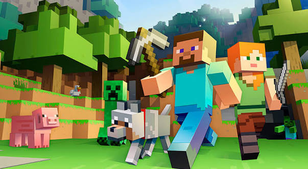
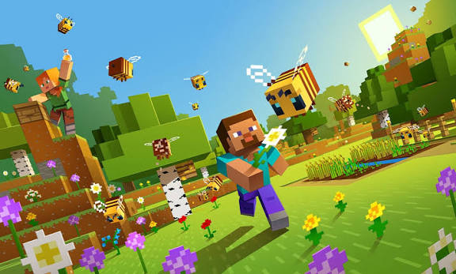
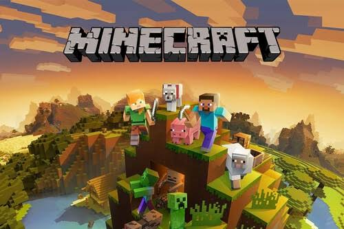

Mundo de bloques
Todo en el juego está compuesto por cubos que representan materiales como tierra, piedra, madera o minerales.
Videojuego de construcción de tipo «Mundo Abierto».
Minecraft es un videojuego de mundo abierto o sandbox donde los jugadores pueden explorar, construir y sobrevivir en un universo formado por bloques tridimensionales

Todo en el juego está compuesto por cubos que representan materiales como tierra, piedra, madera o minerales.
No hay un objetivo obligatorio ni una historia fija, lo que permite a cada jugador decidir qué hacer.
Se puede jugar solo en una computadora, consola o teléfono, o en línea con amigos.
Los modos de juego en Minecraft son las diferentes configuraciones que determinan las reglas, los objetivos y las mecánicas con las que vas a jugar en tu mundo.
El modo clásico y más popular. Tienes barras de salud y hambre, por lo que debes buscar comida y evitar caídas o ataques de monstruos. Los recursos se consiguen picando y explorando, y si mueres, reapareces pero dejas caer tus objetos en el lugar del accidente.
Diseñado para la construcción y la imaginación. Tienes acceso instantáneo e ilimitado a todos los bloques del juego desde un inventario especial. No puedes morir (salvo si caes al vacío), los monstruos no te atacan, rompes los bloques de un solo golpe y tienes la habilidad de volar.
Es una versión extrema del modo supervivencia exclusiva para computadoras. La dificultad está fijada en el nivel más alto y solo tienes una vida. Si mueres, no puedes reaparecer; el juego termina y el mundo se borra o queda en modo espectador permanentemente.
Pensado para mapas creados por la comunidad (como misiones o acertijos). No puedes colocar ni romper bloques libremente a menos que tengas las herramientas específicas designadas por el creador del mapa. Sirve para vivir historias diseñadas por otros jugadores sin romper el escenario.
Te convierte en un "fantasma". Eres completamente invisible, puedes atravesar bloques sólidos y volar a gran velocidad. No puedes interactuar con el mundo, pero te permite ver a través de las paredes y observar lo que hacen otros jugadores o monstruos (incluso puedes ver el mundo desde la perspectiva de una criatura).

